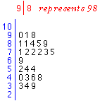

Clusters
If a dot plot or stem and leaf plot of marks separates into two or more groups (clusters), this suggests that the students may belong to distinct groups with different characteristics. For example, further investigation might reveal that the clusters correspond to:
- boys and girls
- two different teachers
- students from two different areas of town.
Detecting the cause of differences between the groups may lead to valuable insights into the data. For example, if the clusters corresponded to two different teachers then questions might be raised about the teaching methods of the one whose class marks were poorer.
Maths marks
The stem and leaf plot on the right shows the maths test marks that we examined earlier in this chapter.
There appears to be a low-density gap in the distribution between 50 and 70, suggesting that the students may be split into two separate clusters.
If the clusters are found to correspond to students who are different in other meaningful ways, it is misleading to examine all the data together -- we should separagely display (and contrast) marks from the groups.